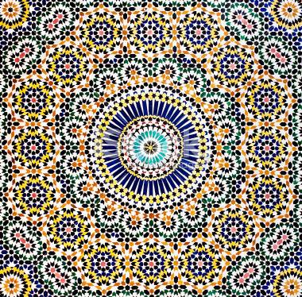

On this page you can find information about me, probably more personal than professional. If you want moreinformation about my work experience.

I'm Julia Traiba, 26 years old. Currently I'm a Bachelor student in the Faculty of Informatics at the University of Lugano.
I'm also a wife and a mother of 3 children.
I like walking or looking at the scenery. I spend much of my free time with my little children, but when they are not with me
I like to read a good book. Most of all I Iike to understand why, it has been my favourite question since I was 4 years old.
I like Informatics and the world of computer science, and I have always wanted to become a scientist, since I was only a child.
I didn't study for many years. My last year of study was in 2008, but now I have chosen to study informatics,
because I like it and I wish to follow my passion for this subject.
Why USI? Because of my family it was difficult to get away from Lugano, but I have the chance to live close to one
of the best Cantonal Universities in Switzerland with an international campus and a Bachelors in English. What more could I ask for?

I'm literally a citizen of the world, not politically, but due to my origin.
I have a multinational/ethnical family.
My father grew up in Colombia, but he's also German, and my mother is Swiss,
and due to my father's job, we moved a lot.
In my childhood, I moved about every 2 years. A lot of change,
but a unique experience. But for many years after that it was difficult to find stability.
At the beginning of my life I lived in the Swiss-French part, and France, but when I was 8 years old, we moved to the Italian part, and because of this I am totally bilingual. Depending on the subject, I think in French or in Italian. In a lot of situations this characteristic can be funny.

Due to my multiple changes, my Education was very complicated. I changed places, types of school and professors many times. This is impossible to put in a normal CV. But If you have interest come here.
One day 10 years ago I decided to escape far away from this nomadic life. I left for Toscana, in Italy,
where I got married, and I continued my high school education. But for many reasons, we had to return to Switzerland.
At that time in my life I decided to stop everything, and to start a family. I was 21 years old when I had my first daughter,
and since then I have two other daughters.
Life always has good and bad sides. In August 2013, I had my last child. I am very proud of my children,
but something in my life was wrong, and taking care of three children is also difficult today.
For many years, I chose to ignore my brain, and to switch off my thoughts, but it was impossible.
I have to think, I have to understand, and I have to prove if my thoughts are true or not. I'm like this and ignoring it can only do me harm.